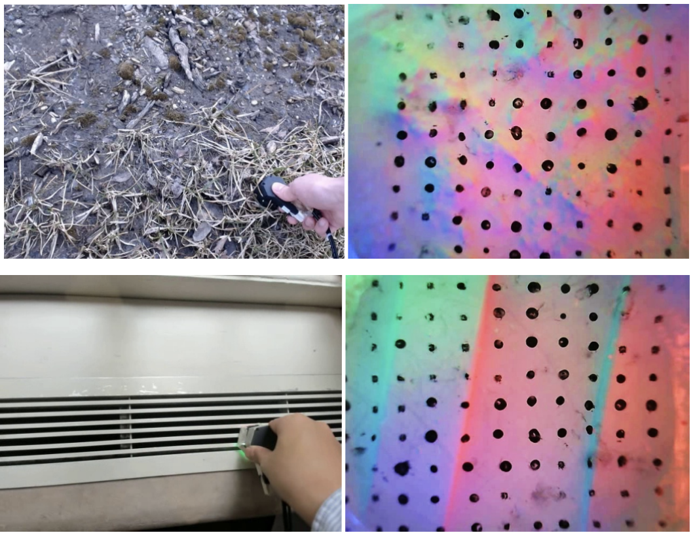

|
Hi! This is Fengyu Yang, a senior undergraduate at University of Michigan College of Engineering majoring in Computer Science, advised by Prof. Andrew Owens. I also spent a wonderful summer last year at Zhejiang University advised by Prof. Xi Li. My undergraduate research interest lies in Computer Vision and Deep Learning, particularly in multi-modal perception, tactile sensing, continue learning and semantic segmentation. Email:fredyang at umich dot edu I am currently applying for Ph.D. in Computer Science for Fall 2023! |

|
News
2022/11: One paper submitted to CVPR 2023.
2022/09: "Touch and Go: Learning from Human-Collected Vision and Touch" accepted by NeurIPS 2022.
2022/09: Nominated by University of Michigan for application of the CRA Outstanding Undergraduate Researcher Award.
2022/07: "RBC: Rectifying the Biased Context in Continual Semantic Segmentation" accepted by ECCV 2022.
2022/03: "Sparse and Complete Latent Organization for Geospatial Semantic Segmentation" accepted by CVPR 2022.
2021/12: Accpet my first invitation to be a reviewer in CVPR 2022.
2021/11: Two papers submitted to CVPR 2022.
Publications
|  |
Touch and Go: Learning from Human-Collected Vision and Touch
Fengyu Yang*, Chenyang Ma*, Jiacheng Zhang, Jing Zhu, Wenzhen Yuan, Andrew Owens NeurIPS (Datasets and Benchmarks Track), 2022 project page / paper / dataset A dataset of paired vision-and-touch data collected by humans. We apply it to: 1) restyling an image to match a tactile input, 2) self-supervised representation learning, 3) multimodal video prediction. |
|
RBC: Rectifying the Biased Context in
Continual Semantic Segmentation
Hanbin Zhao*, Fengyu Yang*, Xinghe Fu, Xi Li ECCV, 2022 paper / code We first consider the biased context in continue semantic segmentation (CSS) and propose a context-rectified image-duplet learning scheme and a biased-context-insensitive consistency loss to tackle CSS problem. |
|
Sparse and Complete Latent Organization for Geospatial Semantic Segmentation
Fengyu Yang*, Chenyang Ma*, CVPR, 2022 paper We propose a prototypical contrastive learning method using both foreground and background categories to tackle the large intra-class variance in geospatial semantic segmentation. |
Honors and Awards
- Wang Chu Chien-Wen Research Award, University of Michigan. April 2022.
- Henry Ford II Prize, University of Michigan. March 2022.
- EECS Scholar, University of Michigan. 2021-2022.
- James B. Angell Scholar, University of Michigan. 2021-2022.
Academic Service
- Reviewer: CVPR 2022-2023, ECCV 2022, NeurIPS 2022 Track on Datasets and Benchmarks, AAAI 2023.
- Teaching Assistant: EECS 504/442 Computer Vision.